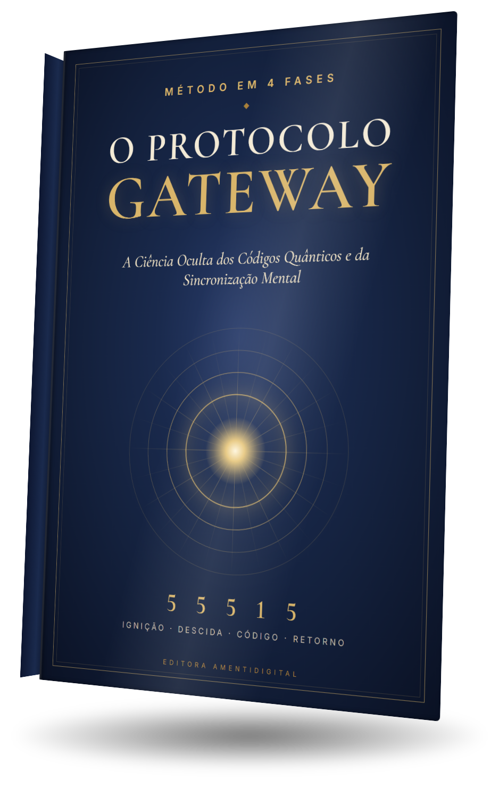
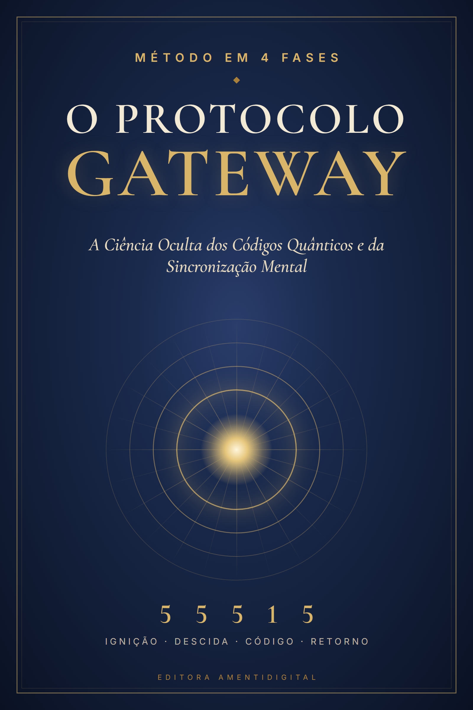

Um método em 4 fases, com roteiros prontos e um plano de 21 dias. É uma prática de relaxamento e atenção, não um tratamento.
Quero o livro por R$ 27PDF · acesso imediato · garantia de 7 dias
Os códigos numéricos viralizaram nas redes, mas quase sempre aparecem sem explicação. Este livro explica o que essa prática trabalha, o que ela não faz e como praticar em 10 minutos.
O método tem quatro fases: respirar para desacelerar, descer a atenção, fixar um ponto de foco e voltar ao normal. A estrutura inteira está descrita no livro, do início ao fim.
O método combina dois elementos:
Relaxar sem um ponto de foco tende a dispersar. Focar sem respirar tende a cansar. O método junta as duas coisas num roteiro de 10 minutos.
Importante: isto é uma prática de relaxamento e atenção. Não trata doenças nem substitui acompanhamento profissional.
Toda sessão segue a mesma estrutura. Depois de três dias de prática você faz de cabeça, sem olhar o livro.
Respiração 4-6 e relaxamento progressivo, para desacelerar o corpo.
Contagem regressiva e atenção dirigida. A mente desacelera sem que você perca a consciência.
Um ponto fixo de atenção, como uma sequência numérica ou uma palavra escolhida, repetido no ritmo da respiração.
Volta suave ao estado normal e uma âncora física para acessar esse estado ao longo do dia.
Uma prática curta de respiração e relaxamento, dentro das 4 fases.
Para quem deita e a cabeça não para. Uma rotina de 10 minutos para soltar o dia antes de dormir.
Uma sessão curta antes de estudar ou trabalhar, para entrar no assunto sem dispersar.
Uma pausa curta quando a atenção cai, sem depender de café.
E ainda: como escolher o seu próprio ponto de foco.

O livro não promete efeitos sobre a mente, o corpo ou o sono. A pesquisa sobre batidas binaurais, por exemplo, tem resultados mistos, e os áudios são só um apoio opcional.
O que tem base sólida é a combinação de respiração lenta, relaxamento muscular e atenção dirigida. É exatamente isso que você vai treinar.
É uma prática de relaxamento e foco. Não é tratamento médico nem psicológico e não substitui acompanhamento profissional.
No checkout você pode adicionar os Áudios Gateway: 4 sessões guiadas com fundo binaural, para praticar só seguindo a voz.
Leia, pratique e veja se é para você. Se não gostar, por qualquer motivo, peça o reembolso em até 7 dias pela própria plataforma de pagamento e devolvemos 100% do valor. Sem perguntas.
Logo depois da confirmação do pagamento você recebe o acesso por e-mail. No Pix, costuma ser na hora.
Não. O método funciona só com respiração e atenção. Os áudios binaurais são um apoio opcional, e para eles o fone é recomendado.
O livro trata de respiração lenta, relaxamento e atenção dirigida, práticas estudadas em pesquisas, com resultados que variam de pessoa para pessoa. Não há promessa de cura nem de resultado garantido.
Não. É uma prática de relaxamento e foco, para usar como complemento. Se você tem algum sintoma persistente, procure um profissional de saúde.
Dez minutos. O Plano de 21 Dias mostra exatamente o que fazer em cada dia.
Você tem 7 dias de garantia. Pede o reembolso pela plataforma e recebe 100% de volta.